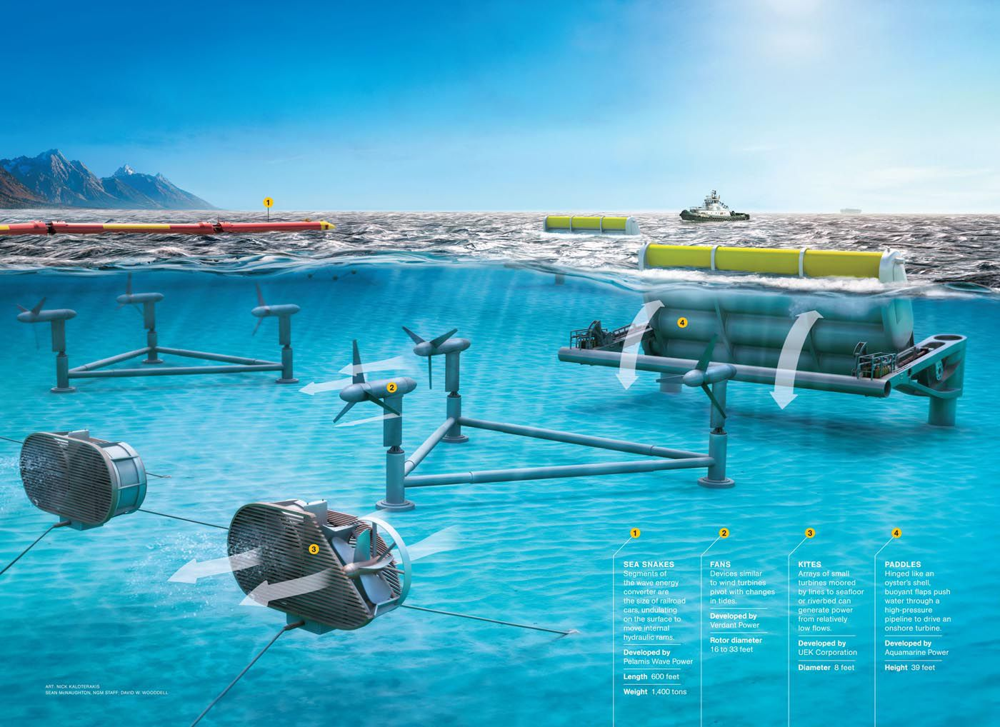
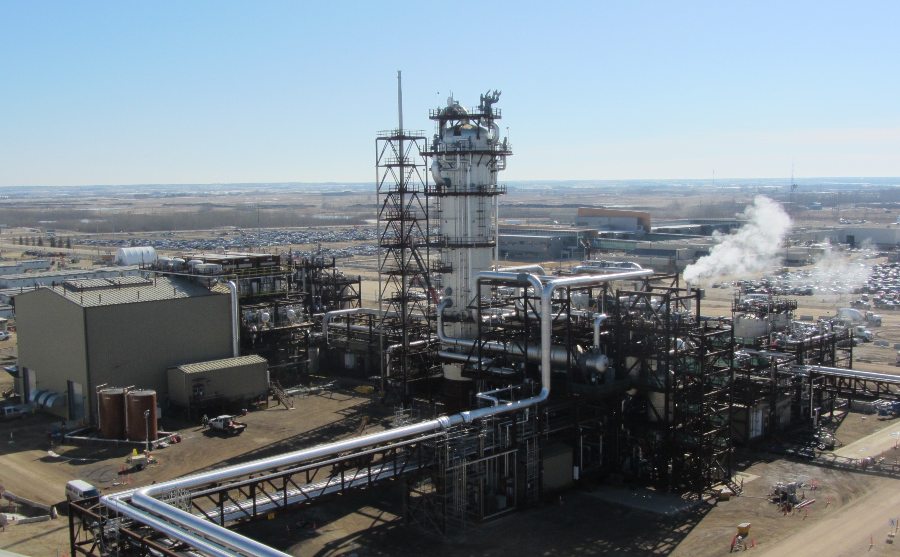
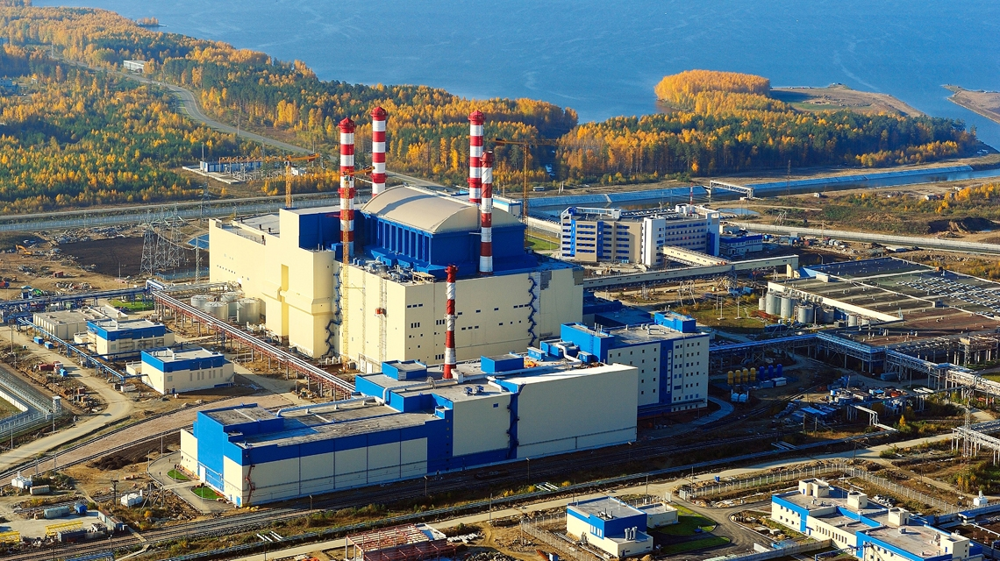
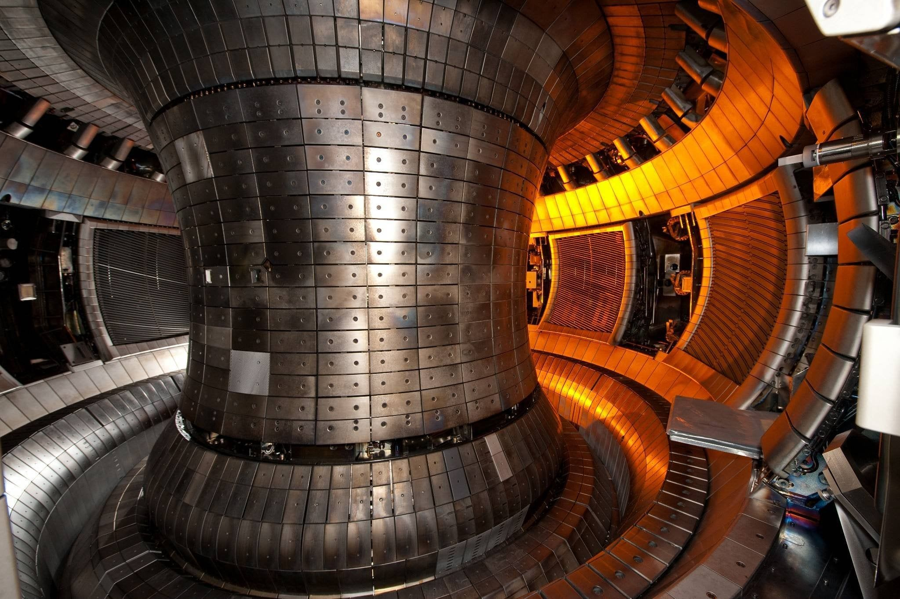
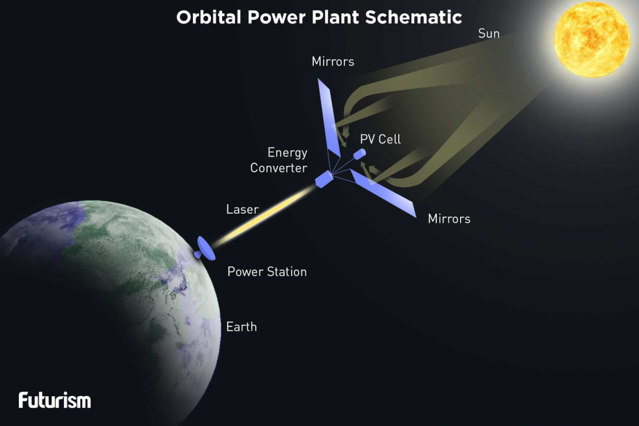

4 Non-Conventional Sources of Energy
Solar Energy
Solar energy is radiant light and heat from the Sun that is harnessed using a range of ever-evolving technologies such as solar heating, photovoltaics, solar thermal energy, solar architecture, molten salt power plants and artificial photosynthesis.- Karnataka.
- Total solar energy capacity: 7,100MW.
- Telengana.
- Total solar energy capacity: 5,000MW.
- Rajasthan.
- Total solar energy capacity: 4,400MW.
- Andhra Pradesh.
- Total solar energy capacity: 3,470MW.
- Gujarat.
- Total solar energy capacity: 2,654MW.
States in which Solar Energy is used:-
- Lower Electricity Bills.
- You only pay for the deficit power consumed i.e. the difference between power consumed by the household from the grid and the solar power generated from the panels. This drastically reduces your electricity bill.
- Diverse Applications.
- Solar energy can be used for diverse purposes like generating electricity or heat. Some more uses for solar energy are solar ventilation, solar transportation, solar charging etc.
- Technology Development.
- Technology is constantly advancing and improvements will intensify in the future. Innovations in quantum physics and nanotechnology can potentially increase the effectiveness of solar panels and double, or even triple, the electrical output of the solar power systems!
- Low Maintenance.
- Net metering system components like solar panels, inverter and mounting structures need low to no maintenance. Since these installations do not require generators or batteries, expense for their maintenance is avoided. This saves not just money but time too!
Advantages of using Solar Energy:-
- Solar Electricity.
- This is one of the solar energy applications that has gained a lot of momentum in recent years. As solar panel costs decline and more people become aware of the financial and environmental benefits of solar energy, solar electricity is becoming increasingly accessible.
- Concentrated Solar Power.
- Concentrated solar power is even more efficient energy than Solar Panels. A CSP solar farm uses mirrors to reflect and concentrate the sun’s energy towards a tower or other receiver, generating heat that can power a turbine to create electricity.
- Solar Heating.
- Typical uses of solar space heating systems include powering radiant floors or pairing with a Forced Hot Air (FHA) system to heat a home. Passive solar home design can also heat homes and businesses in the winter considering the placement of windows and the selection of materials used in the building.
- Solar Transportation.
- Solar-powered vehicles may be the future, with existing applications including buses, trains and race cars built by students for events like Solar Car Challenge. There are even Solar Car Races which push the limits of the technology trying to make the cars safer, more compact and more efficient.
Common Uses/Applications of Solar Energy:-

Wind Energy
Wind energy is a form of solar energy. Wind energy (or wind power) describes the process by which wind is used to generate electricity. Wind turbines convert the kinetic energy in the wind into mechanical power.- Tamil Nadu.
- Total wind power capacity: 9,075MW.
- Gujarat.
- Total wind power capacity: 7,855MW.
- Maharashtra.
- Total wind power capacity: 4781MW.
- Karnataka.
- Total wind power capacity: 4779MW.
- Rajasthan.
- Total wind power capacity: 4292MW.
States in which Wind Energy is used:-
- Cost Effectiveness.
- With a free energy source, land-based wind turbines produce some of the cheapest electricity on the planet. And, because the power produced by wind farms is sold over a long period at a fixed price, there are none of the sudden hikes in price that often affects electricity produced by fossil fuels.
- Space Efficient.
- Wind turbines are getting both larger and more efficient while maintaining a similar footprint. These bigger turbines do have to be more spread out, but the land between can be used for other things such as food production. Therefore, they may be even more efficient than solar farms!
- Lower Prices.
- As technology improves, so electricity produced by wind production gets cheaper. The last 40 years have seen prices tumble, and while that may not continue at the same rate, the trend is downward for the foreseeable future.
- Low Operational Costs.
- In general, once erected and commissioned, wind turbines require little in the way of maintenance. The technology might be sophisticated, but the mechanics are very straightforward and reliable.
Advantages of using Wind Energy:-
- Wind Electricity.
- Most modern wind power is generated in the form of electricity by converting the rotation of turbine blades into electrical current by means of an electrical generator.
- Grain Mills.
- In windmills (a much older technology), wind energy is used to turn mechanical machinery to do physical work, such as crushing grain or pumping water.
- Desalinating Water.
- Recently, wind energy has also been used to desalinate water. For further information on use of wind power for water desalination, see Wind Energy - Water Desalination.
Common Uses/Applications of Wind Energy:-


Tidal Energy
Tidal energy is produced by the surge of ocean waters during the rise and fall of tides. Tidal energy is a renewable source of energy. During the 20th century, engineers developed ways to use tidal movement to generate electricity in areas where there is a significant tidal range - the difference in area between high tide and low tide. All methods use special generators to convert tidal energy into electricity.- Gulf of Cambay.
- Total tidal energy capacity: 7,000MW.
- Gujarat.
- Total tidal energy capacity: 1,200MW.
- West Bengal.
- Total tidal energy capacity: 100MW.
States in which Tidal Energy is used:-
- Clean and Compact.
- Tidal power is a known green energy source, at least in terms of emitting zero greenhouse gases. It also doesn’t take up that much space.
- Tides are predictable.
- Unlike the wind and sun, the power of the tide is predictable – so much so, you could practically set your watch by it. We know the cycles that the tides follow, so it’s easy to guess how much energy a tidal power plant will generate in a day!
- Tidal Power Plants last a long time.
- The equipment used to capture tidal power is built to last around 4 times longer than wind and solar farms. Concrete tidal barrages can have lifespans of 100 years!
- High Power Genereration.
- Water is a dense susbtance, therefore tidal power plants can generate a lot of energy even at low speeds. An underwater turbine can generate energy at 2.2mph, while a wind turbine would need speeds of 7-9mph to start generating power!
Advantages of using Tidal Energy:-
- Tidal Electricity.
- Like other forms of Energy, the main usage of Tidal Energy is in the generation of Electricity. Tidal Energy is being used in France to generate 240 MW of Tidal Electricity at very low costs.
- Grain Mills.
- Tidal Energy has been used for hundreds of years. Just like Wind Mills, Tidal Energy was used for the mechanical crushing of grains in grain mills. The movement of Turbines due to Tidal Energy was used in the crush Grains. However, with the advent of Fossil Fuels, this usage of Tidal Energy has become quite low.
- Energy Storage.
- Tidal Energy can also be used as a store of Energy. Like many of the hydroelectric dams which can be used a large Energy Storage, so Tidal Barrages with their reservoirs can be modified to store energy. Though this has not been tried out, with suitable modifications Tidal Energy can be stored as well though costs may prove to be high.
- Protection to Coast during Storms.
- Tidal Barrages can prevent Damage to the Coast during High Storms and also provide an easy transport method between the 2 arms of a Bay or an Estuary on which it is built.
Common Uses/Applications of Tidal Energy:-
Biomass Energy
Biomass energy is energy generated or produced by living or once-living organisms. The most common biomass materials used for energy are plants, such as corn and soy, above. The energy from these organisms can be burned to create heat or converted into electricity.- Maharashtra.
- Total biomass energy capacity: 2,584MW.
- Uttar Pradesh.
- Total biomass energy capacity: 2,117MW.
- Karnataka.
- Total biomass energy capacity: 1,887MW.
- Tamil Nadu.
- Total biomass energy capacity: 1,012MW.
- Andhra Pradesh.
- Total biomass energy capacity: 483MW.
- Punjab.
- Total biomass energy capacity: 473MW.
States in which Solar Energy is used:-
- Widely Available.
- The organic materials used to produce biomass are infinite, since our society consistently produces waste such as garbage, wood and manure.
- Carbon Neutral.
- As a natural part of photosynthesis, biomass fuels only release the same amount of carbon into the atmosphere as was absorbed by plants in the course of their life cycle.
- Lower Costs.
- While fossil fuel production requires a heavy outlay of capital, such as oil drills, gas pipelines and fuel collection, biomass technology is much cheaper. Manufacturers and producers are able to generate higher profits from a lower output.
- Reduces reliance on fossil fuels.
- Not only is there is a limited supply of fossil fuels, but fossil fuels come with environmental baggage, including the release of large amounts of carbon dioxide into the atmosphere and the pollutants that result from removal, transportation and production.
- Converts waste into energy.
- Biomass production adds a revenue source for manufacturers. Producers of waste can add value by channelling their garbage to create a more profitable use in the form biomass energy. Biomass energy can essentially create energy with things people would've otherwise thrown. Therefore, people can earn secondary income by selling the energy created from waste.
- Reduces Garbage.
- The amount of garbage dumped in landfills is reduced by 60 to 90 percent, and reduces the cost of landfill disposal and amount of land required for landfill.
Advantages of using Biomass Energy:-
- Biomass Electricity.
- Biomass systems ranging from small stoves used in homes for heating or cooking to large power plants used by centralized utilities are being used to produce electricity.
- Space Heating and Cooking.
- In residential applications, biomass can be used for space heating or for cooking. Wood is the most common source of fuel, although many different materials are used. New designs for woodstoves can improve the efficiency of the cooking or heating system, decreasing the amount of fuel that is needed.
- Other Uses.
- Industry and businesses use biomass for several purposes including hot water heating. Many industrial facilities, such as lumber mills, naturally produce organic waste which can generate energy.
Common Uses/Applications of Biomass Energy:-

Soures that aren't being used but have Potential.
Carbon Capture and Storage
Carbon dioxide (CO2) capture and sequestration (CCS) is a set of technologies that can greatly reduce CO2 emissions from new and existing coal- and gas-fired power plants and large industrial sources. CCS is a three-step process that includes:- Capture of CO2 from power plants or industrial processes.
- Transport of the captured and compressed CO2 (usually in pipelines).
- Underground injection and geologic sequestration (also referred to as storage) of the CO2 into deep underground rock formations. These formations are often a mile or more beneath the surface and consist of porous rock that holds the CO2. Overlying these formations are impermeable, non-porous layers of rock that trap the CO2 and prevent it from migrating upward.
Carbon dioxide (CO2) capture and sequestration (CCS) could play an important role in reducing greenhouse gas emissions, while enabling low-carbon electricity generation from power plants. As estimated in the U.S. Inventory of Greenhouse Gas Emissions and Sinks, more than 40% of CO2 emissions in the United States are from electric power generation. CCS technologies are currently available and can dramatically reduce (by 80-90%) CO2 emissions from power plants that burn fossil fuels.

Next-Gen Nuclear Power
A Next Generation Nuclear Plant (NGNP) is a specific proposed generation IV very-high-temperature reactor (VHTR) that could be coupled to a neighboring hydrogen production facility. It could also produce electricity and supply process heat. Up to 30% of this heat could be used to produce hydrogen via high-temperature electrolysis significantly reducing the cost of the process. The envisioned reactor design is helium-cooled, using graphite-moderated thermal neutrons, and TRISO fueled.The NGNP, as a nuclear power facility design, is closely coupled with the United States Department of Energy (DOE) Next Generation Nuclear Plant Project (NGNP Project). The NGNP Project included participation by the DOE, Idaho National Laboratory, and the commercial utilities and reactor designers consortium NGNP Industry Alliance. The United States Nuclear Regulatory Commission (NRC) engaged in pre-licensing interactions with DOE and INL on technical and policy issues that could affect the design and licensing of the NGNP prototype from 2006 until suspension of the effort in 2013.


Nuclear Fusion
If there’s a Holy Grail of clean-energy generation, it’s nuclear fusion, which promises limitless carbon-free power without producing dangerous nuclear waste. By figuring out how to mimic the same kind of atomic reaction that occurs at the centre of the sun in a controlled way, fusion reactors could supply a whole lot of energy with little environmental cost. While the technology may be 30 years from maturity, its researchers developed a small fusion reactor design - one that might someday fit in a tractor-trailer and produce 100 megawatts of power. Hopes to have a working prototype in five years and a commercial version within a decade.Nuclear fusion is a reaction in which two or more atomic nuclei are combined to form one or more different atomic nuclei and subatomic particles (neutrons or protons). The difference in mass between the reactants and products is manifested as either the release or the absorption of energy. This difference in mass arises due to the difference in atomic binding energy between the nuclei before and after the reaction. Fusion happnes constantly in stars, like our Sun, and large amounts of energy is released.
Space Technologies
Space-based energy technologies - things like harvesting hydrogen from the moon to power fuel cells on Earth, or orbiting solar arrays that absorb around-the-clock direct sunlight and beam the energy back down to stations on the ground via radio or microwaves - remain firmly in the realm of science fiction for now. Both NASA and the U.S. Naval Research Lab are already investing in the technology that could be commercialized in 25 years. The ongoing private space renaissance that has seen companies like SpaceX trim the cost of launching cargo into orbit bodes well for more ambitious projects in space. A southern California-based start-up, has inked a deal to supply Pacific Gas and Electric with space-based solar power by the end of the decade.One suggestion is to put self-replicating solar panels in space. These robots would build copies of themselves, autonomously, on the surface of the moon. Then, they would be placed into Earth's orbit, collect the sun's energy, and wirelessly beam it to the ground. It would be difficult to build the solar panels in earth orbit, but we could send self-replicating robots to the moon.
Although these methods of harvesting energy haven't been tried before, they might be very useful in the future. Especially with all the progress we have been making about exploring space recently, it has a lot of potential.
